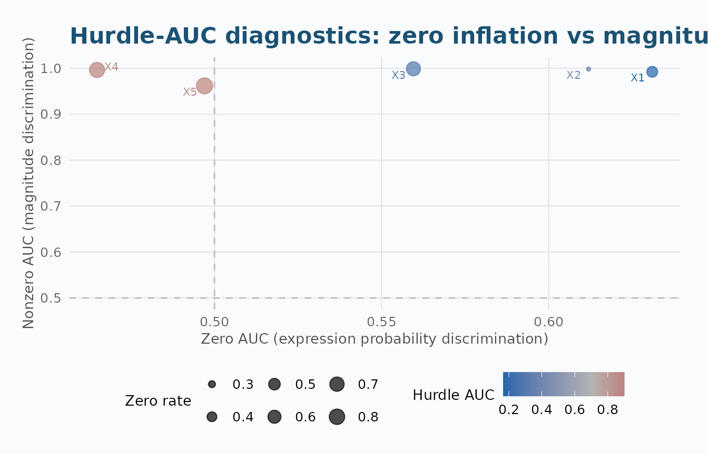
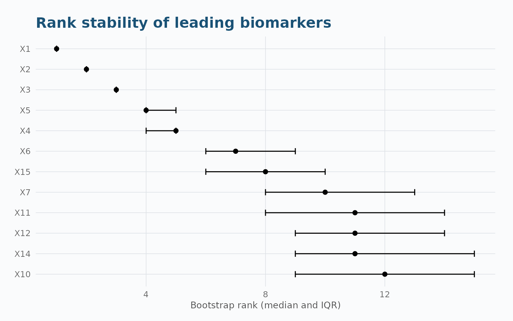
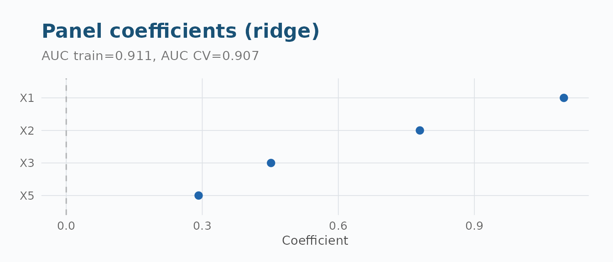

Practical Biomarker Screening with aucmat
Source:vignettes/practical-screening.Rmd
practical-screening.RmdOverview
This vignette walks through a realistic biomarker screening analysis
using aucmat, from simulation through to reporting. We
follow a typical omics workflow: generate data with known properties,
screen biomarkers, compare leading candidates, validate via
cross-validation, combine into a panel, and assess power for a follow-up
study.
1. Simulate Realistic Biomarker Data
We simulate 500 subjects (30% cases) with 20 biomarkers. The first 5 have moderate-to-strong signals (AUC 0.65–0.85); the remaining 15 are noise (AUC 0.50–0.55). Biomarkers within functional groups are correlated.
set.seed(42)
n_biomarkers <- 20
signal_aucs <- c(0.85, 0.78, 0.72, 0.68, 0.65)
noise_aucs <- runif(15, 0.50, 0.55)
target_aucs <- c(signal_aucs, noise_aucs)
sim <- simulate_auc_matrix(
n = 500, prevalence = 0.3,
target_aucs = target_aucs,
correlation = 0.15, structure = "exchangeable",
seed = 42
)
X <- as.matrix(sim$data[, 1:20])
y <- sim$data$truth2. Screen All Biomarkers
fit <- aucmat(X, y, ci = "delong", adjust = "BH")
summary(fit)
#> aucmat screening summary
#> ========================
#> Total samples: 500
#> Usable samples: 500
#> Excluded (NA y): 0
#> Positive class: pos (n = 150)
#> Negative class: neg (n = 350)
#>
#> Biomarkers screened: 20
#> Status counts:
#>
#> ok
#> 20
#>
#> Missingness:
#> Mean missing fraction: 0
#> Max missing fraction: 0
#> Fully observed: 20 biomarkers
#>
#> Multiplicity (BH):
#> q < 0.05: 13 biomarkers
#> q < 0.01: 7 biomarkersTop biomarkers
head(as.data.frame(fit), 8)
#> biomarker auc_raw auc_strength effect_direction n_used n_pos n_neg status
#> 1 X1 0.8541333 0.8541333 higher_in_positive 500 150 350 ok
#> 2 X2 0.7935810 0.7935810 higher_in_positive 500 150 350 ok
#> 3 X3 0.7296381 0.7296381 higher_in_positive 500 150 350 ok
#> 4 X5 0.6842857 0.6842857 higher_in_positive 500 150 350 ok
#> 5 X4 0.6759810 0.6759810 higher_in_positive 500 150 350 ok
#> 6 X6 0.5974667 0.5974667 higher_in_positive 500 150 350 ok
#> 7 X15 0.5947238 0.5947238 higher_in_positive 500 150 350 ok
#> 8 X7 0.5730095 0.5730095 higher_in_positive 500 150 350 ok
#> prauc n_total n_missing missing_fraction std_error conf_low conf_high
#> 1 0.7285218 500 0 0 0.01833443 0.8181985 0.8900682
#> 2 0.6365104 500 0 0 0.02157401 0.7512967 0.8358652
#> 3 0.5686258 500 0 0 0.02480883 0.6810137 0.7782625
#> 4 0.4889319 500 0 0 0.02604235 0.6332436 0.7353278
#> 5 0.4921055 500 0 0 0.02668300 0.6236832 0.7282787
#> 6 0.3720100 500 0 0 0.02753701 0.5434951 0.6514382
#> 7 0.3986764 500 0 0 0.02883744 0.5382035 0.6512442
#> 8 0.3761586 500 0 0 0.02847128 0.5172068 0.6288122
#> p_value q_value rank warning
#> 1 4.001513e-83 8.003025e-82 1 <NA>
#> 2 3.585051e-42 3.585051e-41 2 <NA>
#> 3 2.116290e-20 1.410860e-19 3 <NA>
#> 4 1.479637e-12 7.398183e-12 4 <NA>
#> 5 4.245522e-11 1.698209e-10 5 <NA>
#> 6 4.009184e-04 1.336395e-03 6 <NA>
#> 7 1.020727e-03 2.916363e-03 7 <NA>
#> 8 1.033777e-02 2.584443e-02 8 <NA>3. Hurdle-AUC for Zero-Inflated Biomarkers
Now let’s add zero-inflation to simulate scRNA-seq-like data and compare standard AUC against the two-stage Hurdle-AUC.
set.seed(123)
sim_hur <- simulate_hurdle_auc(
n = 400, prevalence = 0.3,
target_hurdle_aucs = c(0.85, 0.72, 0.60, 0.55, 0.52),
zero_rate_neg = c(0.55, 0.30, 0.70, 0.80, 0.90),
zero_rate_pos = c(0.25, 0.10, 0.60, 0.75, 0.88)
)
Xh <- as.matrix(sim_hur$data[, 1:5])
yh <- sim_hur$data$truth
# Standard AUC
fit_std <- aucmat(Xh, yh, ci = "none")
# Hurdle AUC
fit_hur <- hurdle_auc(Xh, yh)
# Side-by-side comparison
comp <- data.frame(
Biomarker = paste0("X", 1:5),
Standard_AUC = round(fit_std$results$auc_strength, 3),
Hurdle_AUC = round(fit_hur$results$hurdle_auc, 3),
Zero_AUC = round(fit_hur$results$zero_auc, 3),
Nonzero_AUC = round(fit_hur$results$nonzero_auc, 3),
Zero_Rate = round(fit_hur$results$zero_rate_total, 3)
)
comp$Improvement <- round((comp$Hurdle_AUC - comp$Standard_AUC) / comp$Standard_AUC * 100, 1)
comp
#> Biomarker Standard_AUC Hurdle_AUC Zero_AUC Nonzero_AUC Zero_Rate Improvement
#> 1 X1 0.909 0.166 0.631 0.992 0.450 -81.7
#> 2 X2 0.801 0.377 0.612 0.998 0.265 -52.9
#> 3 X3 0.618 0.287 0.560 0.999 0.675 -53.6
#> 4 X4 0.512 0.900 0.465 0.996 0.767 75.8
#> 5 X5 0.506 0.899 0.497 0.962 0.863 77.7
plot_hurdle_diagnostics(fit_hur)
The Hurdle-AUC decomposes discrimination into zero-inflation signal and magnitude signal, recovering AUCs that standard screening misses on zero-heavy biomarkers.
5. Compare Leading Candidates
# All pairs among the top 5
cmp <- compare_auc(fit, X, y, top_n = 5, adjust = "BH")
print(cmp)
#> <aucmat_compare> 10 pairwise comparisons
#> biomarker_a biomarker_b auc_a auc_b auc_diff std_error
#> X1 X2 0.8541333 0.7935810 0.060552381 0.02764886
#> X1 X3 0.8541333 0.7296381 0.124495238 0.02860600
#> X1 X5 0.8541333 0.6842857 0.169847619 0.02963004
#> X1 X4 0.8541333 0.6759810 0.178152381 0.02964190
#> X2 X3 0.7935810 0.7296381 0.063942857 0.03101015
#> X2 X5 0.7935810 0.6842857 0.109295238 0.03310608
#> X2 X4 0.7935810 0.6759810 0.117600000 0.03133155
#> X3 X5 0.7296381 0.6842857 0.045352381 0.03197302
#> X3 X4 0.7296381 0.6759810 0.053657143 0.03187017
#> X5 X4 0.6842857 0.6759810 0.008304762 0.03505457
#> conf_low conf_high p_value q_value n_common n_pos n_neg
#> 0.006361611 0.11474315 2.852062e-02 4.753437e-02 500 150 350
#> 0.068428502 0.18056197 1.348601e-05 4.495337e-05 500 150 350
#> 0.111773810 0.22792143 9.909070e-09 4.954535e-08 500 150 350
#> 0.120055330 0.23624943 1.853467e-09 1.853467e-08 500 150 350
#> 0.003164085 0.12472163 3.920794e-02 5.601135e-02 500 150 350
#> 0.044408513 0.17418196 9.621581e-04 1.924316e-03 500 150 350
#> 0.056191284 0.17900872 1.744489e-04 4.361221e-04 500 150 350
#> -0.017313595 0.10801836 1.560572e-01 1.733969e-01 500 150 350
#> -0.008807237 0.11612152 9.225579e-02 1.153197e-01 500 150 350
#> -0.060400936 0.07701046 8.127270e-01 8.127270e-01 500 150 350
#> hypothesis margin
#> superiority 0
#> superiority 0
#> superiority 0
#> superiority 0
#> superiority 0
#> superiority 0
#> superiority 0
#> superiority 0
#> superiority 0
#> superiority 0Global test
compare_auc_global(fit, X, y, biomarkers = head(fit$results$biomarker, 5))
#> <aucmat_global_test>
#> H0: all AUCs equal
#> n =500 (150+ / 350-)
#> Wald chi2(4) = 56.102, p = 0.0000
#>
#> AUC estimates:
#> X1 X2 X3 X5 X4
#> 0.8541 0.7936 0.7296 0.6843 0.67606. Assess Rank Stability
stab <- auc_stability(X, y, times = 500, seed = 123)
print(stab)
#> <aucmat_stability> 500/500 successful replicates
#> Top biomarkers by median rank:
#> biomarker rank_median rank_q25 rank_q75 auc_mean auc_sd top1_freq
#> X1 1 1 1 0.8542072 0.01906443 0.982
#> X2 2 2 2 0.7938605 0.02001264 0.018
#> X3 3 3 3 0.7288992 0.02396751 0.000
#> X5 4 4 5 0.6830487 0.02654496 0.000
#> X4 5 4 5 0.6747276 0.02747883 0.000
#> X6 7 6 9 0.5968973 0.02779127 0.000
#> X15 8 6 10 0.5930889 0.02896229 0.000
#> X7 10 8 13 0.5730335 0.02996219 0.000
#> X11 11 8 14 0.5703043 0.02905593 0.000
#> X12 11 9 14 0.5687912 0.02600102 0.000
plot_auc_stability(stab, n_label = 12)
7. Cross-Validated Screening
Same-data AUCs are optimistically biased. Cross-validation gives honest out-of-fold estimates:
cv <- cv_aucmat(X, y, n_folds = 5, seed = 123)
print(cv)
#> <aucmat_cv> 20 biomarkers
#> CV: 5-fold
#> Mean optimism: 0
#>
#> Top biomarkers by CV AUC:
#> rank_cv biomarker auc_cv auc_in_sample optimism
#> 1 X1 0.8541333 0.8541333 0
#> 2 X2 0.7935810 0.7935810 0
#> 3 X3 0.7296381 0.7296381 0
#> 4 X5 0.6842857 0.6842857 0
#> 5 X4 0.6759810 0.6759810 0
#> 6 X6 0.5974667 0.5974667 0
#> 7 X15 0.5947238 0.5947238 0
#> 8 X7 0.5730095 0.5730095 0
#> 9 X12 0.5696190 0.5696190 0
#> 10 X11 0.5690286 0.5690286 0
# Compare: in-sample vs CV
head(data.frame(
biomarker = cv$results$biomarker,
auc_in_sample = round(cv$results$auc_in_sample, 3),
auc_cv = round(cv$results$auc_cv, 3),
optimism = round(cv$results$optimism, 3)
), 8)
#> biomarker auc_in_sample auc_cv optimism
#> 1 X1 0.854 0.854 0
#> 2 X2 0.794 0.794 0
#> 3 X3 0.730 0.730 0
#> 4 X5 0.684 0.684 0
#> 5 X4 0.676 0.676 0
#> 6 X6 0.597 0.597 0
#> 7 X15 0.595 0.595 0
#> 8 X7 0.573 0.573 08. Build a Multivariable Panel
Combine the top biomarkers into a single score.
fit_auc_panel() reports both an in-sample AUC and an
honest, nested cross-validated AUC: penalty selection
and centering/scaling are re-derived from each fold’s training portion
alone, so the held-out fold never leaks into the model evaluated on
it.
# Select top 4 biomarkers by CV AUC
top4 <- head(cv$results$biomarker, 4)
X_panel <- X[, top4, drop = FALSE]
panel <- fit_auc_panel(X_panel, y, method = "ridge", n_folds = 5, seed = 123)
print(panel)
#> <aucmat_panel> ridge
#> AUC (training): 0.9108
#> AUC (CV): 0.9074
#> Optimism: 0.0034
#>
#> Coefficients:
#> X1 X2 X3 X5
#> 1.0974 0.7799 0.4516 0.2919
plot(panel)
8.1 Other combination methods
Ridge is one of six options. "su_liu" is a closed-form
linear combination that maximizes AUC under the multivariate-normal
(binormal) model – fast, no glmnet dependency, and a
natural fit alongside this package’s own binormal simulation engine.
"unweighted" sums direction-aligned, standardized
biomarkers with equal weight and fits nothing at all – a useful baseline
for judging whether the fitted methods are earning their complexity.
panel_su <- fit_auc_panel(X_panel, y, method = "su_liu", n_folds = 5, seed = 123)
panel_uw <- fit_auc_panel(X_panel, y, method = "unweighted", n_folds = 5, seed = 123)
data.frame(
method = c("ridge", "su_liu", "unweighted"),
auc_train = c(panel$auc_train, panel_su$auc_train, panel_uw$auc_train),
auc_cv = c(panel$auc_cv, panel_su$auc_cv, panel_uw$auc_cv)
)
#> method auc_train auc_cv
#> 1 ridge 0.9108000 0.9074095
#> 2 su_liu 0.9103048 0.9015619
#> 3 unweighted 0.8887429 0.88792388.3 Does combining actually help?
compare_panel_auc() tests the panel’s honest
cross-validated score against each individual biomarker on the same
subjects – a confidence interval and p-value for whether combining
helped, rather than two AUC numbers to eyeball.
compare_panel_auc(panel, X_panel, y)
#> <aucmat_compare> 4 pairwise comparisons
#> biomarker_a biomarker_b auc_a auc_b auc_diff std_error conf_low
#> PANEL_SCORE X1 0.9074095 0.8541333 0.05327619 0.01329944 0.02720976
#> PANEL_SCORE X2 0.9074095 0.7935810 0.11382857 0.01913171 0.07633111
#> PANEL_SCORE X3 0.9074095 0.7296381 0.17777143 0.02177607 0.13509112
#> PANEL_SCORE X5 0.9074095 0.6842857 0.22312381 0.02477446 0.17456676
#> conf_high p_value q_value n_common n_pos n_neg hypothesis margin
#> 0.07934262 6.178269e-05 NA 500 150 350 superiority 0
#> 0.15132603 2.685783e-09 NA 500 150 350 superiority 0
#> 0.22045173 3.251430e-16 NA 500 150 350 superiority 0
#> 0.27168086 2.133155e-19 NA 500 150 350 superiority 09. Plan a Follow-Up Study
What sample size is needed to detect AUC = 0.70 with 80% power?
pwr <- power_auc_matrix(
target_aucs = 0.70,
power = 0.80,
prevalence = 0.3,
alpha = 0.05
)
print(pwr)
#> <aucmat_power>
#> Target AUC: 0.700 (null = 0.500)
#> N: 7 | Prevalence: 0.30 | Correlation: 0.00
#> Alpha: 0.050 | Adjustment: none | Alternative: two.sided
#>
#> Power: 0.800Summary
| Step | Function | Key output |
|---|---|---|
| Simulate | simulate_auc_matrix() |
Biomarker matrix + outcome |
| Screen | aucmat() |
Direction-preserving AUCs with q-values |
| Visualize |
plot_auc_rank(), plot_auc_volcano(),
plot_auc_forest()
|
Publication-ready plots |
| Compare | compare_auc() |
Paired differences with CIs |
| Global test | compare_auc_global() |
Omnibus Wald test |
| Stability | auc_stability() |
Bootstrap rank distributions |
| Cross-validate | cv_aucmat() |
Out-of-fold AUCs, optimism |
| Panel | fit_auc_panel() |
Combined biomarker score, honest nested CV AUC |
| Panel ROC | plot_roc_panel() |
Panel vs. individual-biomarker ROC curves |
| Panel comparison | compare_panel_auc() |
Does the panel beat its components? |
| Power | power_auc_matrix() |
Sample size for next study |